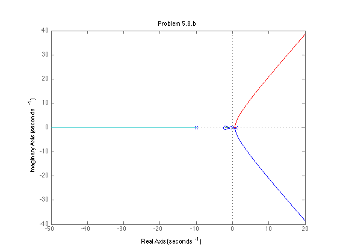

num = conv([1 2], [1 6]);
den = conv(conv([1 5], [1 1]), [1 10 0]);
sys = tf(num,den);
figure
rlocus(sys);
title('Problem 5.4.c')
num = [1 3];
den = [1 8 0 0];
sys = tf(num,den);
figure
rlocus(sys);
title('Problem 5.6.d')
num = [1 2];
den = [conv([1 2 2], [1 10 0])];
sys = tf(num, den);
figure;
rlocus(sys)
title('Problem 5.7.a')
num = [1 2];
den = [conv([1 10 0], [1 0 -1])];
figure;
sys = tf(num, den);
rlocus(sys)
title('Problem 5.8.b')
num = -1.*[1 2];
den = [conv([1 2 2], [1 10 0])];
sys = tf(num, den);
figure;
rlocus(sys)
title('Problem 5.41 Problem 1')
num = -1.*[1 2];
den = [conv([1 10 0], [1 0 -1])];
figure;
sys = tf(num, den);
rlocus(sys)
title('Problem 5.41 Problem 2')
